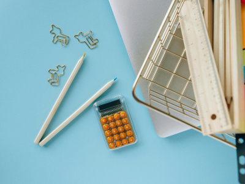
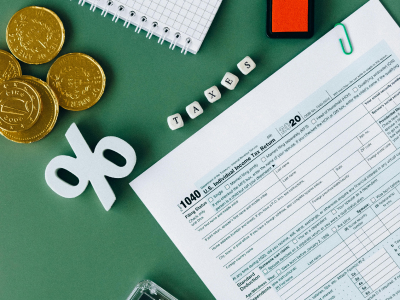
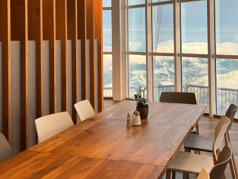

HOME > 지속가능경영 > 윤리경영
윤리경영
제1의 경영원칙, 윤리경영
웅진의 경영정신인 또또사랑을 바탕으로 윤리경영을 지속적으로 실천하고 있습니다.-
- 공정하고 투명한 경영 활동
- 2003년 윤리경영을 선포한 이후, 웅진의 경영정신인 또또사랑을 바탕으로 윤리경영을 지속적으로 실천하고 있습니다. 특히, 윤리규범 및 실천조직 등 윤리경영 시스템을 도입하고 공감대 형성 및 확산을 위한 다양한 프로그램을 개발, 실천하여 윤리경영이 기업문화로 자리매김할 수 있도록 최선의 노력을 다하고 있습니다.
-
- 일상업무에서의 윤리경영
- 매년 명절에 선물 안주고 안받기 캠페인을 시행해 오고 있으며 임직원의 부정행위를 방지하고 외주 업체와 거래가 많은 부서에서는 업무 특성상 우월한 지위를 남용하지 못하도록 윤리제보센터를 운영하여 일상업무에서의 윤리경영을 실천하고 있습니다.
-
- 윤리경영의 시스템화
- 웅진의 윤리경영은 단순히 회계의 투명만은 아닙니다. 제품의 기획과 구매, 마케팅과 고객의 사후 서비스까지 기업 활동의 전 부문에서 윤리경영을 시스템화하고 있습니다. 또한, 웅진의 윤리경영은 투명경영에만 국한되지 않습니다. 좋은 제품으로 사회발전에 기여하는 것뿐 아니라 우리가 투명하게 얻은 수익을 통해서 사회적 소명을 다하겠습니다.
-
구매 투명성
 -
회계 투명성
 -
인사 투명성
